Great Barrier Reef. The Great Barrier Reef is a coral reef off the coast of Australia.
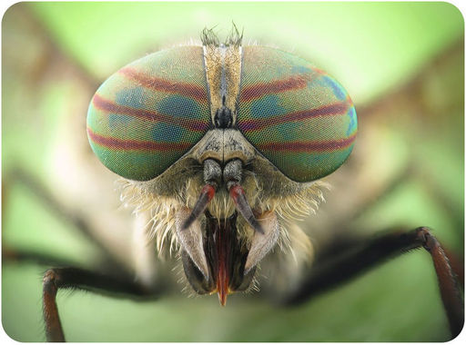
This may look like a scary creature from your worst nightmare, but it wouldn’t hurt a fly. In fact, it is a fly! The picture shows the charming portrait of a horsefly, up close and personal. Those big, striped, colorful orbs are its eyes. Did you ever look through a kaleidoscope? If so, then you have an idea of what the world looks like to a horsefly.
What other organs do insects like this horsefly have? Besides sensing their environment, what other functions do their organs serve? In this chapter, you will find out. You will read not only about fly eyes. You’ll also read about octopus ink, spider fangs, and other fascinating features of invertebrates.
Invertebrates are animals without a backbone. They are the most numerous animals on Earth. Most invertebrates are insects. However, simpler invertebrates evolved before insects. Some—like the sponges you will read about next—have existed virtually unchanged for hundreds of millions of years. Their continued existence is evidence that they are well adapted for their habitats. They also evolved some of the most important traits that are found in almost all animals today. Without the traits that evolved in sponges and other simple invertebrates, you would not exist.
Sponges are aquatic invertebrates that make up the phylum Porifera. The word porifera means pore-bearing. The phylum is aptly named. As you can see from Figure below , a sponge has a porous body. There are at least 5,000 living species of sponges. Almost all of them inhabit the ocean, living mainly on coral reefs or the ocean floor.
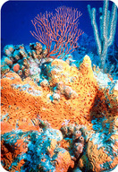
Sponge on a Coral Reef. This orange sponge is covered with pores. Can you predict the function of the pores?
Sponges come in a variety of shapes and sizes. For example, they may be shaped like tubes, fans, cones, or just blobs. They range in diameter from about a centimeter (0.4 inches) to over a meter (3.3 feet). Many species live in colonies that may be quite large. Adult sponges are sessile. This means they are unable to move from place to place. Root-like projections anchor them to solid surfaces such as rocks and reefs.
Sponges have an internal skeleton that gives them support and protection. An internal skeleton is called an endoskeleton. A sponge endoskeleton consists of short, sharp rods called spicules (see Figure below ). Spicules are made of silica, calcium carbonate, or spongin, a tough protein. They grow from specialized cells in the body of the sponge.
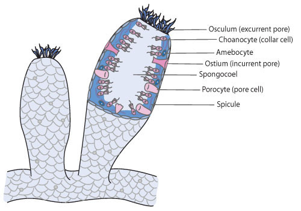
Sponge Anatomy. A sponge lacks tissues and organs, but it has several types of specialized cells.
Sponges are filter feeders. They pump water into their body through their pores. The water flows through a large central cavity called the spongocoel (see Figure above ). As the water flows by, specialized collar cells filter out food particles such as bacteria. Collar cells have tiny hairs that trap the particles. They also have a flagellum that whips the water and keeps it moving. Once the food is trapped, the collar cells digest it (see Figure below ). Cells called amebocytes also help digest the food. They distribute the nutrients to the rest of the body as well. Finally, the water flows back out of the body through an opening called the osculum. As water flows through the sponge, oxygen diffuses from the water to the sponge’s cells. The cells also expel wastes into the water for removal through the osculum.
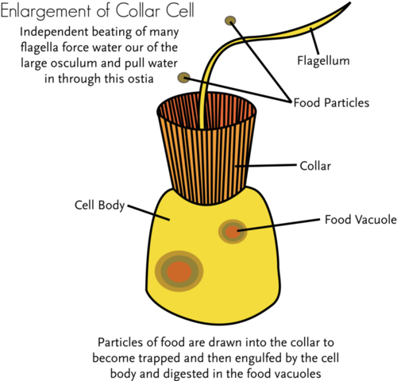
Collar Cell. The collar cells of sponges trap and digest food.
Sponges reproduce both asexually and sexually. Asexual reproduction occurs by budding. Figure below shows the sponge life cycle when sexual reproduction is involved. Adult sponges produce eggs and sperm. In many species, the same individuals produce both. However, they don’t produce eggs and sperm at the same time. As a result, self-fertilization is unlikely to occur. What is an advantage of avoiding self-fertilization?
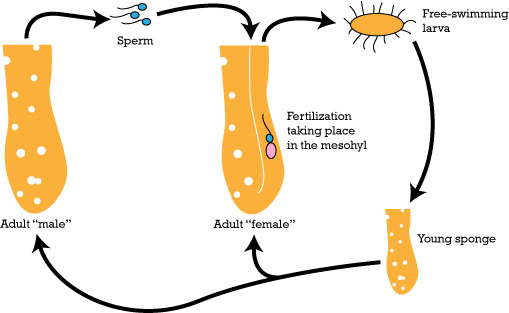
Sponge Life Cycle. When sponges reproduce sexually, they have this life cycle.
Sperm are released into the surrounding water through the osculum. If they enter a female sponge through a pore, they may be trapped by collar cells. Trapped sperm are delivered to eggs inside the female body, where fertilization takes place. The resulting zygote develops into a larva. Unlike the adult, the larva is motile. It is covered with cilia that propel it through the water. As the larva grows, it becomes more similar to an adult sponge and loses its ability to swim.
Sponges that live on coral reefs have symbiotic relationships with other reef species. They provide shelter for algae, shrimp, and crabs. In return, they get nutrients from the metabolism of the organisms they shelter. Sponges are a source of food for many species of fish. Because sponges are sessile, they cannot flee from predators. Their sharp spicules provide some defense. They also produce toxins that may poison predators that try to eat them.
Cnidarians are invertebrates such as jellyfish and corals. They belong to the phylum Cnidaria. All cnidarians are aquatic. Most of them live in the ocean. Cnidarians are a little more complex than sponges. They have radial symmetry and tissues. There are more than 10,000 cnidarian species. They are very diverse, as shown in Figure below .
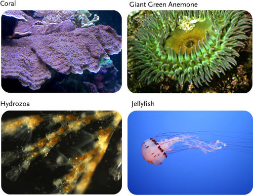
Cnidarian Diversity. Cnidarians show a lot of variability.
All cnidarians have something in common. It’s a nematocyst, like the one shown in Figure below . A nematocyst is a long, thin, coiled stinger. It has a barb that may inject poison. These tiny poison darts are propelled out of special cells. They are used to attack prey or defend against predators.
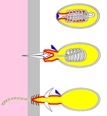
Cnidarian Nematocyst. A cnidarian nematocyst is like a poison dart. It is ejected from a specialized cell (shown here in yellow).
There are two basic body plans in cnidarians. They are called the polyp and medusa. Both are shown in Figure below . The polyp has a tubular body and is usually sessile. The medusa (plural, medusae) has a bell-shaped body and is typically motile. Some cnidarian species alternate between polyp and medusa forms. Other species exist in just one form or the other.
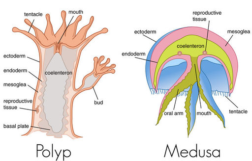
Cnidarian Body Plans. Cnidarians may exist in the polyp (left) or medusa (right) form.
The body of a cnidarian consists of two cell layers, ectoderm and endoderm. The cells surround a digestive cavity called the coelenteron (see Figure below ). Cnidarians have a simple digestive system. The single opening is surrounded by tentacles, which are used to capture prey. The tentacles are covered with nematocyst cells. Digestion takes place in the coelenteron. Nutrients are absorbed and gases exchanged through the cells lining this cavity. Fluid in the coelenteron creates a hydrostatic skeleton. Cnidarians have a simple nervous system consisting of a nerve net that can detect touch. They may also have other sensory structures. For example, jellyfish have light-sensing structures and gravity-sensing structures. These senses give them a sense of up versus down. It also helps them balance.
Figure below shows a general cnidarian life cycle. Polyps usually reproduce asexually. One type of asexual reproduction in polyps leads to the formation of new medusae. Medusae usually reproduce sexually. Sexual reproduction forms a zygote. The zygote develops into a larva called a planula. The planula, in turn, develops into a polyp. There are many variations on the general life cycle. Obviously, species that exist only as polyps or medusae have a life cycle without the other form.
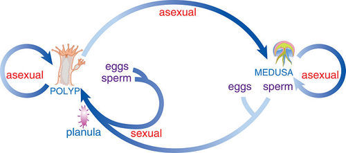
General Cnidarian Life Cycle. Cnidarians may reproduce both asexually and sexually.
Cnidarians can be found in almost all ocean habitats. They may live in water that is shallow or deep, warm or cold. A few species live in freshwater. Some cnidarians live alone, while others live in colonies. Corals form large colonies in shallow tropical water. They are confined to shallow water because they have a mutualistic relationship with algae that live inside them. The algae need sunlight for photosynthesis, so they must be relatively close to the surface of the water. Corals exist only as polyps. They catch plankton with their tentacles. Many secrete a calcium carbonate exoskeleton. Over time, this builds up to become a coral reef (see Figure below ). Coral reefs provide food and shelter to many ocean organisms. They also help protect shorelines from erosion by absorbing some of the energy of waves. Coral reefs are at risk of destruction today.
Great Barrier Reef. The Great Barrier Reef is a coral reef off the coast of Australia.
Unlike corals, jellyfish spend most of their lives as medusae. They live virtually everywhere in the ocean. They are typically carnivores. They prey on zooplankton, other invertebrates, and the eggs and larvae of fish.
Jellyfish. They are otherworldly creatures that glow in the dark, without brains or bones, some more than 100 feet long. And there are many different types. Jellyfish are free-swimming members of the phylum Cnidaria. Jellyfish are found in every ocean, from the surface to the deep sea. To find out more about jellyfish, see http://www.kqed.org/quest/television/amazing-jellies--siphonophores2 .

Click on the image above for more content
Flatworms belong to the phylum Platyhelminthes. Examples of flatworms are shown in Figure below . There are more than 25,000 species in the flatworm phylum.
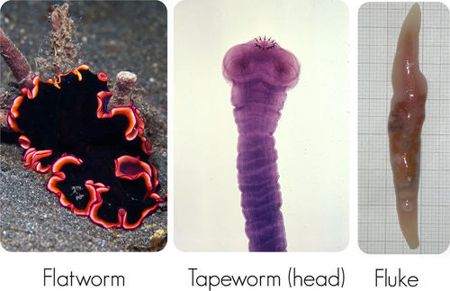
Platyhelminthes. Platyhelminths include flatworms, tapeworms, and flukes.
Flatworms range in length from about 1 millimeter (0.04 inches) to more than 20 meters (66 feet). They have a flat body because they do not have a coelom or even a pseudocoelom. They also lack a respiratory system. Instead, their cells exchange gases by diffusion directly with the environment. Their digestive system is incomplete.
Flatworms reflect several major evolutionary advances in invertebrates. They have three embryonic cell layers, including mesoderm. The mesoderm layer allows them to develop organ systems. For example, they have muscular and excretory systems. The muscular system allows them to move from place to place over solid surfaces. The excretory system lets them maintain a proper balance of water and salts. Flatworms also show cephalization and bilateral symmetry.
Flatworms reproduce sexually. In most species, the same individuals produce both eggs and sperm. After fertilization occurs, the fertilized eggs pass out of the adult’s body and hatch into larvae. There may be several different larval stages. The final larval stage develops into the adult form, and the life cycle repeats.
Both flukes and tapeworms are parasites with vertebrate hosts, including human hosts. Flukes live in the host’s circulatory system or liver. Tapeworms live in the host’s digestive system. Usually, more than one type of host is required to complete the parasite’s life cycle. Look at the life cycle of the liver fluke in Figure below . As an adult, the fluke has a vertebrate host. As a larva, it has an invertebrate host. If you follow the life cycle, you can see how each host becomes infected so the fluke can continue its life cycle.
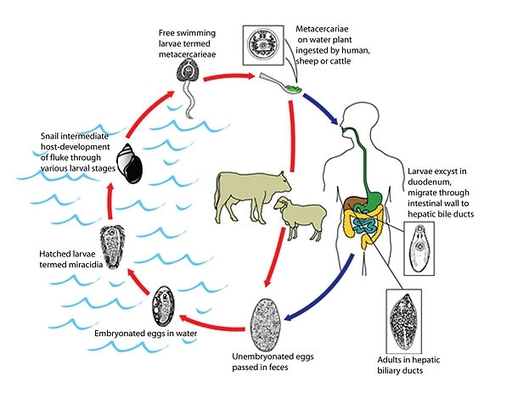
Life Cycle of the Sheep Liver Fluke. The sheep liver fluke has a complicated life cycle with two hosts. How could such a complicated way of life evolve?
Tapeworms and flukes have suckers and other structures for feeding on a host. Tapeworms also have a ring of hooks on their head to attach themselves to the host (see Figure below ). Unlike other invertebrates, tapeworms lack a mouth and digestive system. Instead, they absorb nutrients directly from the host’s digestive system with their suckers.
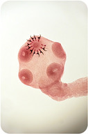
Tapeworm Suckers and Hooks. The head of a tapeworm has several suckers. At the very top of the head is a “crown” of hooks called a scolex.
Not all flatworms are parasites. Some are free-living carnivores. They eat other small invertebrates and decaying animals. Most of the free-living species live in aquatic habitats, but some live in moist soil.
Roundworms make up the phylum Nematoda. This is a very diverse animal phyla. It has more than 80,000 known species.
Roundworms range in length from less than 1 millimeter to over 7 meters (23 feet) in length. As their name suggests, they have a round body. This is because they have a pseudocoelom. This is one way they differ from flatworms. Another way is their complete digestive system. It allows them to take in food, digest food, and eliminate wastes all at the same time.
Roundworms have a tough covering of cuticle on the surface of their body. It prevents their body from expanding. This allows the buildup of fluid pressure in the pseudocoelom. As a result, roundworms have a hydrostatic skeleton. This provides a counterforce for the contraction of muscles lining the pseudocoelom. This allows the worms to move efficiently along solid surfaces.
Roundworms reproduce sexually. Sperm and eggs are produced by separate male and female adults. Fertilization takes place inside the female organism. Females lay huge numbers of eggs, sometimes as many as 100,000 per day! The eggs hatch into larvae, which develop into adults. Then the cycle repeats.
Roundworms may be free-living or parasitic. Free-living worms are found mainly in freshwater habitats. Some live in soil. They generally feed on bacteria, fungi, protozoans, or decaying organic matter. By breaking down organic matter, they play an important role in the carbon cycle.
Parasitic roundworms may have plant, vertebrate, or invertebrate hosts. Several species have human hosts. For example, hookworms, like the one in Figure below , are human parasites. They infect the human intestine. They are named for the hooks they use to grab onto the host’s tissues. Hookworm larvae enter the host through the skin. They migrate to the intestine, where they mature into adults. Adults lay eggs, which pass out of the host in feces. Then the cycle repeats.
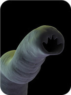
Hookworm Parasite. Hookworms like this one are common human parasites.
Tiny pinworms are the most common roundworm parasites of people in the U.S. In some areas, as many as one out of three children are infected. Humans become infected when they ingest the nearly microscopic pinworm eggs. The eggs hatch and develop into adults in the host’s digestive tract. Adults lay eggs that pass out of the host’s body to continue the cycle. Pinworms have a fairly simple life cycle with only one host.
1. Define sessile. Name an invertebrate with a sessile adult stage.
2. Describe the skeleton of a sponge.
3. Sponges have specialized cells called collar cells. Describe how collar cells are specialized for the functions they serve.
4. What is a nematocyst? What is its function?
5. How do coral reefs form?
6. Describe specialized feeding structures of parasitic platyhelminths.
7. How do free-living nematodes contribute to the carbon cycle?
8. Create a diagram of an adult sponge body plan that shows how sponges obtain food.
9. Apply what you know about pinworms to develop one or more recommendations for preventing pinworm infections in humans.
10. Compare and contrast cnidarian polyps and medusae.
11. Platyhelminths and nematodes are both worms. Justify classifying them in different invertebrate phyla.
12. Some parasitic flatworms have a very complicated life cycle with more than one host. Infer why this might be adaptive.
In this lesson, you read about flatworms and roundworms. In the next lesson, you’ll read about worms called annelids. Mollusks such as snails are also described in the next lesson.
Mollusks are invertebrates such as the common snail. Most mollusks have shells. Annelids are worms such as the familiar earthworm. They have segmented bodies. Annelids look like roundworms on the outside, but on the inside they are more like mollusks.
Have you ever been to the ocean or eaten seafood? If you have, then you probably have encountered members of the phylum Mollusca. Mollusks include snails, scallops, and squids, as shown in Figure below . There are more than 100,000 known species of mollusks. About 80 percent of mollusk species are gastropods.
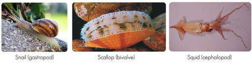
This figure shows some of the more common and familiar mollusks.
Mollusks are a very diverse phylum. Some mollusks are nearly microscopic. The largest mollusk, a colossal squid, may be as long as a school bus and weigh over half a ton! The basic body plan of a mollusk is shown in Figure below . The main distinguishing feature is a hard outer shell. It covers the top of the body and encloses the internal organs. Most mollusks have a distinct head region. The head may have tentacles for sensing the environment and grasping food. There is generally a muscular foot, which may be used for walking. However, the foot has evolved modifications in many species to be used for other purposes.
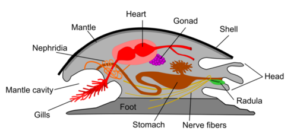
Basic Mollusk Body Plan. The basic body plan shown here varies among mollusk classes. For example, several mollusk species no longer have shells. Do you know which ones?
Two unique features of mollusks are the mantle and radula (see Figure above ). The mantle is a layer of tissue that lies between the shell and the body. It secretes calcium carbonate to form the shell. It forms a cavity, called the mantle cavity, between the mantle and the body. The mantle cavity pumps water for filter feeding. The radula is a feeding organ with teeth made of chitin. It is located in front of the mouth in the head region. Herbivorous mollusks use the radula to scrape food such as algae off rocks. Predatory mollusks use the radula to drill holes in the shells of their prey.
Mollusks have a coelom and a complete digestive system. Their excretory system consists of tube-shaped organs called nephridia (see Figure above ). The organs filter waste from body fluids and release the waste into the coelom. Terrestrial mollusks exchange gases with the surrounding air. This occurs across the lining of the mantle cavity. Aquatic mollusks “breathe” under water with gills. Gills are thin filaments that absorb gases and exchange them between the blood and surrounding water. Mollusks have a circulatory system with one or two hearts that pump blood. The heart is a muscular organ that pumps blood through the circulatory system when its muscles contract. The circulatory system may be open or closed, depending on the species.
The major classes of mollusks vary in structure and function. You can read about some of their differences in Figure below .
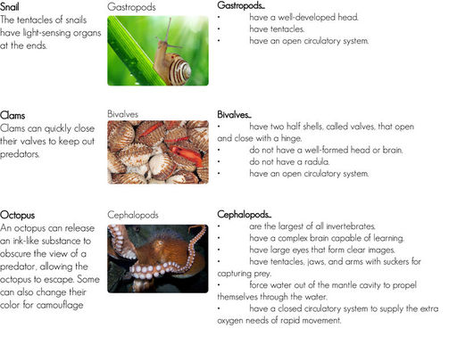
Use this figure to compare and contrast gastropods, bivalves, and cephalopods
Mollusks reproduce sexually. Most species have separate male and female sexes. Gametes are released into the mantle cavity. Fertilization may be internal or external, depending on the species. Fertilized eggs develop into larvae. There may be one or more larval stages. Each one is different from the adult stage. Mollusks (and annelids) have a unique larval form called a trochophore. It is a tiny organism with cilia for swimming.
Mollusks live in most terrestrial, freshwater, and marine habitats. However, the majority of species live in the ocean. They can be found in both shallow and deep water and from tropical to polar latitudes. Mollusks are a major food source for other organisms, including humans. You may have eaten mollusks such as clams, oysters, scallops, or mussels. The different classes of mollusks have different ways of obtaining food.
What's the coolest critter in the ocean under 4 inches long? The Dwarf Cuttlefish! Cuttlefish are marine animals that belong to the class Cephalopoda. Despite their name, cuttlefish are not fish but molluscs. Recent studies indicate that cuttlefish are among the most intelligent invertebrates, with one of the largest brain-to-body size ratios of all invertebrates. Cuttlefish have an internal shell called the cuttlebone and eight arms and two tentacles furnished with denticulated suckers, with which they secure their prey. For more information on the cuttlefish, see http://www.kqed.org/quest/television/cool-critters-dwarf-cuttlefish .
Click on the image above for more content
The Humboldt squid is a large, predatory invertebrate found in the waters of the Pacific Ocean. A mysterious sea creature up to 7 feet long, with 10 arms, a sharp beak and a ravenous appetite, packs of fierce Humboldt Squid attack nearly everything they see, from fish to scuba divers. Traveling in groups of 1,000 or more and swimming at speeds of more than 15 miles an hour, these animals hunt and feed together, and use jet propulsion to shoot out of the water to escape predators. Humboldt squid live at depths of between 600 and about 2,000 feet, coming to the surface at night to feed. They live for approximately two years and spend much of their short life in the ocean's oxygen-minimum zone, where very little other life exists. Because they live at such depths, little is known about these mysterious sea creatures. The Humboldt squid usually lives in the waters of the Humboldt Current, ranging from the southern tip of South America north to California, but in recent years, this squid has been found as far north as Alaska. Marine biologists are working to discover why they have headed north from their traditional homes off South America. See http://www.kqed.org/quest/television/the-fierce-humboldt-squid for additional information.
Click on the image above for more content
When marine biologist Roger Hanlon captured the first scene in this video he started screaming. Hanlon, senior scientist at the Marine Biological Laboratory in Woods Hole, studies camouflage in cephalopods--squid, cuttlefish and octopus. They are masters of optical illusion. The video at http://www.sciencefriday.com/videos/watch/10397 shows some of Hanlon's top video picks of sea creatures going in and out of hiding.
Click on the image above for more content
The phylum Annelida is made up of segmented worms such as earthworms. Segmented worms are divided into many repeating segments. There are roughly 15,000 species of annelids. Most belong to one of three classes. A species in each class is pictured in Figure below .
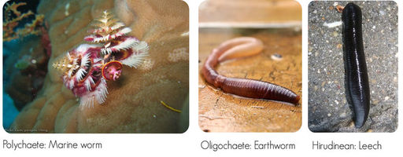
Classes of Annelids. The majority of annelids are polychaetes. They live on the ocean floor, so you may not be familiar with them.
Annelids range in length from less than 1 millimeter to over 3 meters. They never attain the large size of some mollusks. Like mollusks, however, they have a coelom. In fact, the annelid coelom is even larger, allowing greater development of internal organs. Annelids have other similarities with mollusks, including:
The segmentation of annelids is highly adaptive. For one thing, it allows more efficient movement. Each segment generally has its own nerve and muscle tissues. Thus, localized muscle contractions can move just those segments needed for a particular motion. Segmentation also allows an animal to have specialized segments to carry out particular functions. This allows the whole animal to be more efficient. Annelids have the amazing capacity to regrow segments that break off. This is called regeneration.
Annelids have a variety of structures on the surface of their body for movement and other functions. These vary, depending on the species. Several of the structures are described in Figure below .
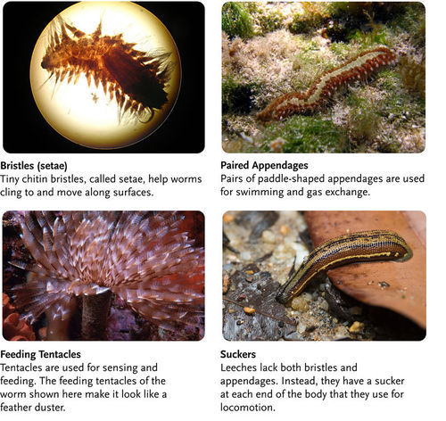
Annelid External Structures. Many annelids have bristles and other types of external structures. Each structure is not present in all species.
Most species of annelids can reproduce both asexually and sexually. However, leeches can reproduce only sexually. Asexual reproduction may occur by budding or fission. Sexual reproduction varies by species.
Annelids live in a diversity of freshwater, marine, and terrestrial habitats. They vary in what they feed on and how they obtain their food.
1. Describe the basic body plan of a mollusk.
2. What are gills? What is their function?
3. What is the difference between an open and a closed circulatory system?
4. What is a radula? What is it used for?
5. Define regeneration.
6. Create a Venn diagram to show important similarities and differences among the three major classes of mollusks.
7. Explain the advantages of a segmented body.
8. Polychaete worms have an interesting reproductive strategy. Describe this strategy and infer its adaptive significance.
Most invertebrates you have read about so far live in aquatic habitats. Many of those that are not aquatic live inside other organisms as parasites. In the next lesson you will read about invertebrates that live mainly on land. They are the arthropods, such as insects.
Arthropods are not only the largest phylum of invertebrates. They are by far the largest phylum of the animal kingdom. Some 80 percent of all species living on Earth today are arthropods. Obviously, arthropods have been extremely successful. What accounts for their success? In this lesson, you will find out.
There are more than a million known species of arthropods. There may actually be ten times that many. Arthropods include insects, spiders, lobsters, and centipedes. The arthropods pictured in Figure below give just a hint of the phylum’s diversity.
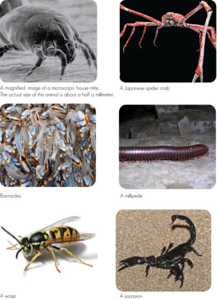
Arthropod Diversity. Dust mites are among the smallest of arthropods. Japanese spider crabs are the largest. Besides size, what other differences among arthropods do you see in these photos?
Arthropods range in length from about 1 millimeter to 4 meters (about 13 feet). They have a segmented body with a hard exoskeleton. They also have jointed appendages. The body segments are the head, thorax, and abdomen (see Figure below ). In some arthropods, the head and thorax are joined together as a cephalothorax.
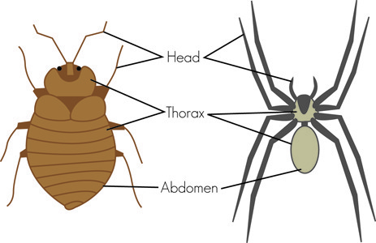
Arthropod Body Plan. The honeybee shows the general body plan of an arthropod.
The arthropod exoskeleton consists of several layers of cuticle. The exoskeleton prevents water loss and gives support and protection. It also acts as a counterforce for the contraction of muscles. The exoskeleton doesn’t grow as the animal grows. Therefore, it must be shed and replaced with a new one periodically through life. This is called molting . The jointed appendages of arthropods may be used as legs for walking. Being jointed makes them more flexible. Try walking or climbing stairs without bending your knees, and you’ll see why joints are helpful. In most arthropods, the appendages on the head have been modified for other functions. Figure below shows some of head appendages found in arthropods. Sensory organs such as eyes are also found on the head.
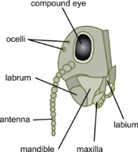
Arthropod Head. Arthropods have evolved a variety of specialized appendages and other structures on their head.
Some arthropods have special excretory structures. They are called coxal glands and Malphigian tubules. Coxal glands collect and concentrate liquid waste from blood. They excrete the waste from the body through a pore. Malphigian tubules carry waste from the digestive tract to the anus. The waste is excreted through the anus.
Like mollusks and annelids, aquatic arthropods may have gills to exchange gases with the water (discussed below). Terrestrial arthropods, on the other hand, have special respiratory structures to exchange gases with the air. These are described in Figure below .
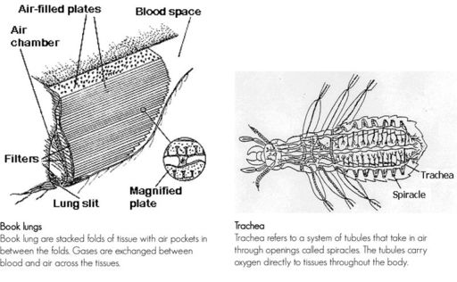
How Terrestrial Arthropods Breathe Air. Terrestrial arthropods have respiratory structures that let them breathe air.
In the ponds of northern Europe lives a tiny brown spider that spends its entire life underwater. But just like land spiders, it needs oxygen to breathe. So, how does this spider breath? Does it use book lungs? No. In fact, aquatic spiders, known as diving bell spiders , have gills, and every so often, the spider leaves its underwater web to visit the surface and bring back a bubble of air that sticks to its hairy abdomen. It deposits the bubble into a little silk air tank. This diving bell is a gill that sucks oxygen from the water, allowing the spider to stay underwater for up to 24 hours. See http://news.sciencemag.org/sciencenow/2011/06/spiders.html?ref=hp for additional information and additional pictures. http://www.youtube.com/watch?v=GidrcvjoeKE shows these spiders in action.
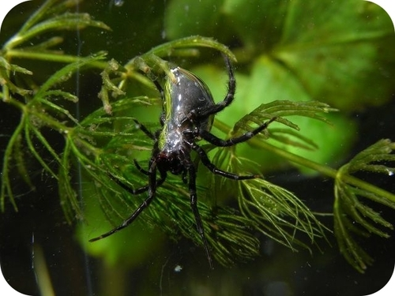
A diving bell (water) spider.
Click on the image above for more content
Arthropods have a life cycle with sexual reproduction. Most species go through larval stages after hatching. The larvae are very different from the adults. They change into the adult form in a process called metamorphosis . This may take place within a cocoon. A familiar example of metamorphosis is the transformation of a caterpillar (larva) into a butterfly (adult). Other arthropod species, in contrast, hatch young that look like small adults. These species lack both larval stages and metamorphosis.
The oldest known arthropods are trilobites . A fossil trilobite is shown in Figure below . Trilobites were marine arthropods. They had many segments with paired appendages for walking. As arthropods continued to evolve, segments fused. Eventually, arthropods with three major segments evolved. Appendages were also lost or modified during the course of arthropod evolution.
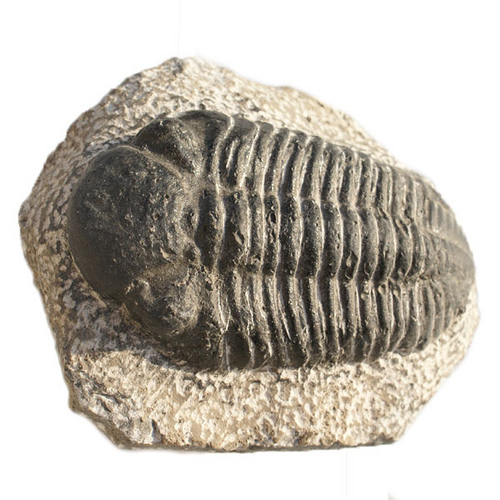
Trilobite Fossil. This trilobite fossil represents the earliest arthropods. Trilobites first appeared more than 500 million years ago. They lived for at least 200 million years before going extinct. They left behind large numbers of fossils.
Arthropods were the first animals to live on land. The earliest terrestrial arthropods were probably millipedes. They moved to land about 430 million years ago. Early land arthropods evolved adaptations such as book lungs or trachea to breathe air. The exoskeleton was another important adaptation. It prevents an animal from drying out. It also provides support in the absence of buoyant water.
Living arthropods are divided into four subphyla. They are described in Table below . The Hexapoda subphylum includes mainly insects. There are so many insects and they are so important that they are described in greater detail below.

Click on the image above to view the table
Most members of the subphylum Hexapoda are insects (class Insecta). In fact, more than half of all known organisms are insects. There may be more than 10 million insect species in the world, most of them yet to be identified. It’s clear that insects, and not humans, dominate life on Earth.
Insects range in length from less than a millimeter to about the length of your arm. They can be found in most habitats, but they are mainly terrestrial. Many can fly, so they are also aerial. Like other arthropods, insects have a head, thorax, and abdomen. They have a wide variety of appendages, including six legs attached to the thorax. Insects have a pair of antennae for “smelling” and “tasting” chemicals. Some insects can also use their antennae to detect sound. Other sensory organs on the head include several simple eyes and a pair of compound eyes. The compound eyes let insects see images. Butterflies and bees can even see in color. For feeding, the head contains one pair of mandibles and two pairs of maxillae. Insects consume a wide range of foods, and their mouthparts have become specialized. Several variations are shown in Figure below .
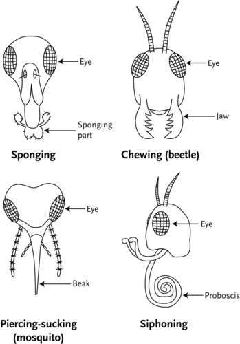
Mouthpart Specialization in Insects. The mouthparts of insects are adapted for different food sources. How do you think the different mouthparts evolved?
An insect’s abdomen contains most of the internal organs. Like other arthropods, insects have a complete digestive system. They also have an open circulatory system and central nervous system. Like other terrestrial arthropods, they have trachea for breathing air and Malphigian tubules for excretion.
The main reason that insects have been so successful is their ability to fly. Insects are the only invertebrates that can fly and the first animals to evolve flight. Flight has important advantages. It’s a guaranteed means of escape from nonflying predators. It also aids in the search for food and mates. Insects generally have two pairs of wings for flight. Wings are part of the exoskeleton and attached to the thorax. Insect wings show a lot of variation. As you can see in Figure below , butterfly wings are paper-thin, whereas beetle wings are like armor. Not all insect wings work the same way, either. They differ in how the muscles are attached and whether the two pairs of wings work independently or together. Besides flight, wings serve other functions. They may protect the body (beetles), communicate visually with other insects (butterflies), or produce sounds to attract mates (katydids).
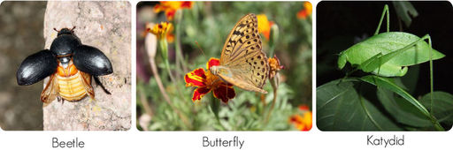
Form and Function in Insect Wings. Beetles, butterflies, and katydids all have two pairs of wings that they use for flight. However, the wings are very different because they have other functions as well.
Nearly all insects reproduce sexually. Some can also reproduce asexually. An example of an insect life cycle is shown in Figure below .
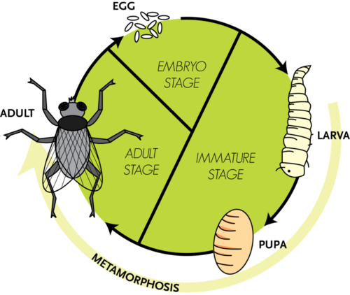
Insect Life Cycle. This diagram represents the life cycle of a fly. Most insects have a similar life cycle.
When an insect egg hatches, a larva emerges. The larva eats and grows and then enters the pupa stage. The pupa is immobile and may be encased in a cocoon. During the pupa stage, the insect goes through metamorphosis. Tissues and appendages of the larva break down and reorganize into the adult form. How did such an incredible transformation evolve? Metamorphosis is actually very advantageous. It allows functions to be divided between life stages. Each stage can evolve adaptations to suit it for its specific functions without affecting the adaptations of the other stage.
Insects are capable of a surprising range of behaviors. Most of their behaviors, such as flying and mating, are instinctive. These are behaviors that don’t need to be learned. They are largely controlled by genes. However, some insect behaviors are learned. For example, ants and bees can learn where food is located and keep going back for more.
Many species of insects have evolved complex social behaviors. They live together in large, organized colonies (see Figure below ). This is true of ants, termites, bees, and wasps. Colonies may include millions of individual insects. Colony members divide up the labor of the colony. Different insects are specialized for different jobs. Some reproduce, while others care for the young. Still others get food or defend the nest.
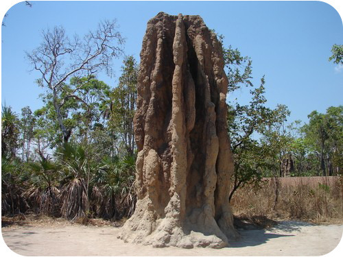
Termite Nest. This cathedral-like structure is the nest of a huge colony of termites in Australia. In fact, it is the world’s largest known termite nest. It towers 7.5 meters (25 feet) above the ground and houses millions of termites.
Living in a large colony requires good communication. Ants communicate with chemicals called pheromones. For example, an ant deposits pheromones on the ground as it returns to the nest from a food source. It is marking the path so other ants can find the food. Honeybees communicate by doing a “waggle dance.”
Most of us think ants are just pests. But not Brian Fisher. Known as “The Ant Guy,” he's on a mission to show the world just how important and amazing these little creatures are and in the process, catalog all of the world's 30,000 ant species before they become casualties of habitat loss. See http://www.kqed.org/quest/television/ants-the-invisible-majority2 for more information.
Click on the image above for more content
Ladybugs, also known as ladybird beetles, have a life cycle of four to six weeks. In one year as many as six generations of ladybird beetles may hatch. In the spring, each adult female lays up to 300 eggs in small clusters on plants where aphids are present. After a week the wingless larvae hatch. Both the ladybird beetle larvae and adults are active predators, eating only aphids, scales, mites and other plant-eating insects. The ladybugs live on the vegetation where their prey is found, which includes roses, oleander, milkweed and broccoli. Adult ladybugs don’t taste very good. A bird careless enough to try to eat one will not swallow it.
By late May to early June, when the larvae have depleted the food supply, the adults migrate to the mountains. There, they eat mainly pollen. The ladybugs gain fat from eating the pollen and this tides them over their nine-month hibernation. Thousands of adults hibernate overwinter in tight clusters, called aggregates, under fallen leaves and ground litter near streams. In the clear, warmer days of early spring, the ladybugs break up the aggregates and begin several days of mating. Learn about ladybugs at http://www.kqed.org/quest/television/ladybug-pajama-party .
Click on the image above for more content
Most humans interact with insects every day. Many of these interactions are harmless and often go unnoticed. However, insects cause humans a lot of harm. They spread human diseases. For example, the deadly bubonic plague of the middle ages was spread by fleas. Today, millions of people die each year from malaria, which is spread by mosquitoes. Insects also eat our crops. Sometimes they travel in huge swarms that completely strip the land of all plant material (see Figure below ). On the other hand, we depend on insects for the very food we eat. Without insects to pollinate them, flowering plants—including many food crops—could not reproduce.
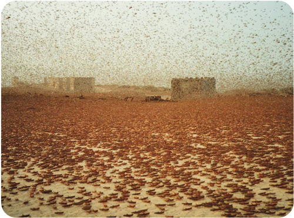
Locust Swarm. A swarm of locusts in the African country of Mauritania darkens the mid-day sky. The hungry insects will eat virtually all the plants in their path.
Honeybees are one of the most well-known insects on the planet. Bees are naturalized on every continent except Antarctica. Honeybees have a highly developed social structure and depend on their community, or colony, for survival, with a colony containing up to 20,000 bees. When bees search plants for nectar, pollen sticks to the fuzzy hairs that cover their hind legs. At the next flower, some of the pollen rubs off and fertilizes that flower. In this way, bees help improve fruit production. Bees pollinate an estimated 130 different varieties of fruit, flowers, nuts and vegetables in the United States alone. Farmers obviously depend on bees to pollinate crops, such as fruit and nuts, but in recent years thousands of bee colonies have disappeared. This could be a devastating issue for farmers. Can anything be done? Meet two Northern California researchers looking for ways to make sure we always have bees to pollinate our crops at http://www.kqed.org/quest/television/better-bees-super-bee-and-wild-bee .
Click on the image above for more content
1. Identify distinguishing traits of most arthropods.
2. What is molting? Why does it occur?
3. Name three arthropod head appendages and state their functions.
4. Describe two structures that allow arthropods to breathe air.
5. List several traits that characterize insects.
6. State two important advantages of flight in insects.
7. Give examples of insect behavior.
8. Assume you see a “bug” crawling over the ground. It has two body segments and lacks antennae. Which arthropod subphylum does the “bug” belong to? Explain your answer.
9. Create a timeline of arthropod evolution.
10. Present facts and a logical argument to support the following statement: Insects dominate life on Earth.
11. Relate form to function in the mouthparts of insects.
12. Explain why distinctive life stages and metamorphosis are adaptive.
The invertebrates described so far in this chapter are protostomes. They differ from the other major grouping of animals, the deuterostomes, in how their embryos develop. The next lesson describes invertebrates that are deuterostomes. These invertebrates are more closely related to vertebrates such as humans. Some of these invertebrates are even placed in the chordate phylum.
The invertebrate phyla described in the first three lessons of this chapter are all nonchordates. They don’t have a notochord, and they are not closely related to chordates. In this lesson, you will read about invertebrates that are closely related to chordates—including you.
Echinoderms are marine organisms that make up the phylum Echinodermata. They can be found in the ocean from the equator to the poles. There are roughly 6000 living species of echinoderms. They are among the most distinctive organisms within the animal kingdom. Members of the phylum include sea stars (starfish), sand dollars, and feather stars, all shown in Figure below .
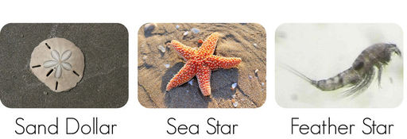
Examples of Echinoderms. You may have seen sea stars and sand dollars at the beach because they live in shallow water near the shore. Other echinoderms, such as feather stars, are less commonly seen because they live in the deep ocean.
Echinoderms are named for their “spiny skin.” However, the spines aren’t on their skin. They are part of the endoskeleton. The endoskeleton consists of calcium carbonate plates and spines, covered by a thin layer of skin. Adult echinoderms have radial symmetry. This is easy to see in the sea star and sand dollar in Figure above . However, echinoderms evolved from an ancestor with bilateral symmetry. Evidence for this is the bilateral symmetry of their larvae.
A unique feature of echinoderms is their water vascular system. This is a network of canals that extend along each body part. In most echinoderms, the canals have external projections called tube feet (see Figure below ). The feet have suckers on the ends. Muscle contractions force water into the feet, causing them to extend outward. As the feet extend, they attach their suckers to new locations, farther away from their previous points of attachment. This results in a slow but powerful form of movement. The suckers are very strong. They can even be used to pry open the shells of prey.
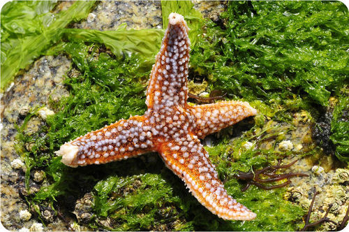
Tube Feet of a Sea Star. The tube feet of a sea star (in white) are part of its water vascular system. There is a sucker on the end of each foot that allows the animal to “walk” slowly over a surface. The suckers are strong enough to pry open shells.
Echinoderms lack respiratory and excretory systems. Instead, the thin walls of their tube feet allow oxygen to diffuse in and wastes to diffuse out. Echinoderms also lack a centralized nervous system. They have an open circulatory system and lack a heart. On the other hand, echinoderms have a well-developed coelom and a complete digestive system. Echinoderms use pheromones to communicate with each other. They detect the chemicals with sensory cells on their body surface. Some echinoderms also have simple eyes (ocelli) that can sense light. Like annelids, echinoderms have the ability to regenerate a missing body part.
Some echinoderms can reproduce asexually by fission, but most echinoderms reproduce sexually. They generally have separate sexes and external fertilization. Eggs hatch into free-swimming larvae. The larvae undergo metamorphosis to change into the adult form. During metamorphosis, their bilateral symmetry changes to radial symmetry.
Living echinoderms are placed in five classes. These five classes show many similarities. Organisms in each class are described in Table below .
Click on the image above to view the table
The phylum Chordata consists of both invertebrates and vertebrates chordates . It is a large and diverse phylum. It includes some 60,000 species. Chordates range in length from about a centimeter to over 30 meters (100 feet). They live in marine, freshwater, terrestrial, and aerial habitats. They can be found from the equator to the poles. Several examples of chordates are pictured in Figure below .
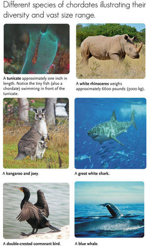
Diversity of Chordates. These six species illustrate the diversity of the phylum Chordata.
Chordates have three embryonic cell layers. They also have a segmented body with a coelom and bilateral symmetry. Chordates have a complete digestive system and a closed circulatory system. Their nervous system is centralized. There are four additional traits that are unique to chordates. These four traits, shown in Figure below , define the chordate phylum.
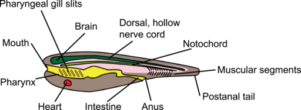
Body Plan of a Typical Chordate. The body plan of a chordate includes a post-anal tail, notochord, dorsal hollow nerve cord, and pharyngeal slits.
In some chordates, all four traits persist throughout life and serve important functions. However, in many chordates, including humans, all four traits are present only during the embryonic stage. After that, some of the traits disappear or develop into other organs. For example, in humans, pharyngeal slits are present in embryos and later develop into the middle ear.
Living species of chordates are classified into three major subphyla: Vertebrata, Urochordata, and Cephalochordata. Vertebrates are all chordates that have a backbone. The other two subphyla are invertebrate chordates that lack a backbone.
Members of the subphylum Urochordata are tunicates (also called sea squirts). Members of the subphylum Cephalochordata are lancelets . Both tunicates and lancelets are small and primitive. They are probably similar to the earliest chordates that evolved more than 500 million years ago.
There are about 3,000 living species of tunicates (see Figure below ). They inhabit shallow marine waters. Larval tunicates are free-swimming. They have all four defining chordate traits. Adult tunicates are sessile. They no longer have a notochord or post-anal tail.
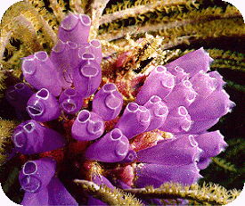
Tunicates (Urochordata). Tunicates are one of two subphyla of invertebrate chordates.
Adult tunicates are barrel-shaped. They have two openings that siphon water into and out of the body. The flow of water provides food for filter feeding. Tunicates reproduce sexually. Each individual produces both male and female gametes. However, they avoid self-fertilization. Tunicates can also reproduce asexually by budding.
There are only about 25 living species of lancelets. They inhabit the ocean floor where the water is shallow. Lancelet larvae are free-swimming. The adults can swim but spend most of their time buried in the sand. Like tunicates, lancelets are filter feeders. They take in water through their mouth and expel it through an opening called the atriopore (see Figure below ). Lancelets reproduce sexually and have separates sexes.
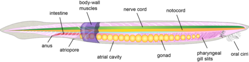
Lancelet (Cephalochordata). Unlike tunicates, lancelets retain all four defining chordate traits in the adult stage. Can you find them?
1. Describe the echinoderm endoskeleton.
2. Give an example of an organism in each class of living echinoderms.
3. Identify the four defining traits of chordates.
4. Name and describe the two subphyla of invertebrate chordates.
5. Create a labeled drawing that explains how the tube feet of echinoderms allow them to “walk.”
6. Adult sea stars and other echinoderms have obvious radial symmetry. What evidence supports the claim that echinoderms evolved from an ancestor with bilateral symmetry?
7. Adult humans lack the defining traits of chordates. Why are humans still classified in the chordate phylum?
This chapter and the chapter before it describe the amazing diversity of invertebrates. The remaining chapters are devoted to vertebrates.
Opening image copyright Mikhail Melnikov, 2010. http://www.shutterstock.com . Used under license from Shutterstock.com.
For Table above , from top to bottom:
For Table above , from top to bottom:
{kind=link}
{kind=link}
{kind=link}
{kind=link}
{kind=link}
{kind=link}
{kind=link}
{kind=link}
%20http://www.flickr.com/photos/comasdonor/357547824/;%20(Anemone)%20http://en.wikipedia.org/wiki/File:Giant_Green_Anemone.gif;%20(Hydrozoa)%20http://en.wikipedia.org/wiki/File:ColonialHydrozoa.jpg;%20(Jellyfish)%20http://www.flickr.com/photos/barmans/1122000793/in/photostream/){kind=link}
{kind=link}
%20http://www.shutterstock.com;%20(Tapeworm)%20http://totallyfreeimages.com/118004/Scolex-of-Taenia-solium.;%20(Fluke)%20http://commons.wikimedia.org/wiki/File:A-ferox_digenean1.jpg){kind=link}
{kind=link}
%20http://commons.wikimedia.org/wiki/File:Common_snail.jpg;%20(Scallop)%20http://commons.wikimedia.org/wiki/File:Placopecten_magellanicus.jpg;%20(Squid)%20http://commons.wikimedia.org/wiki/File:Lycoteuthidae_sp.jpg){kind=link}
%20http://www.flickr.com/photos/sarahfaulwetter/4009449466/;%20(Paired%20appendages)%20http://commons.wikimedia.org/wiki/File:Bearded_Fireworm_%28Small%29.jpg;%20(Feeding%20tentacles)%20http://commons.wikimedia.org/wiki/File:Featherduster_300.jpg;%20(Suckers)%20http://www.shutterstock.com){kind=link}
%20http://en.wikipedia.org/wiki/File:House_Dust_Mite.jpg;%20(Spider%20crab)%20http://en.wikipedia.org/wiki/File:Macrocheira_kaempferi.jpg;%20(Barnacles)%20http://www.flickr.com/photos/runningclouds/5910009162/;%20(Millipede)%20http://www.flickr.com/photos/rabi/2757536869/;%20(Wasp)%20http://en.wikipedia.org/wiki/File:European_wasp_white_bg.jpg;%20(Scorpion)%20http://www.flickr.com/photos/mikebaird/5008387049/){kind=link}
%20http://www.shutterstock.com/pic.mhtml?id=1160127;%20(Sea%20star)%20http://www.shutterstock.com/pic.mhtml?id=54725755;%20(Feather%20star)%20http://commons.wikimedia.org/wiki/File:Harpacticoid_copepod_GLERL_1.jpg){kind=link}
%20http://www.flickr.com/photos/chikawatanabe/61157859/;%20(Rhinoceros)%20http://www.flickr.com/photos/berniedup/6628446501/;%20(Kangaroo)%20http://en.wikipedia.org/wiki/File:Kangaroo_and_joey03.jpg;%20(Shark)%20http://en.wikipedia.org/wiki/File:White_shark.jpg;%20(Cormorant)%20http://www.flickr.com/photos/almiyi/175114877/;%20(Whale)%20http://www.nmfs.noaa.gov/pr/species/mammals/cetaceans/bluewhale.htm){kind=link}